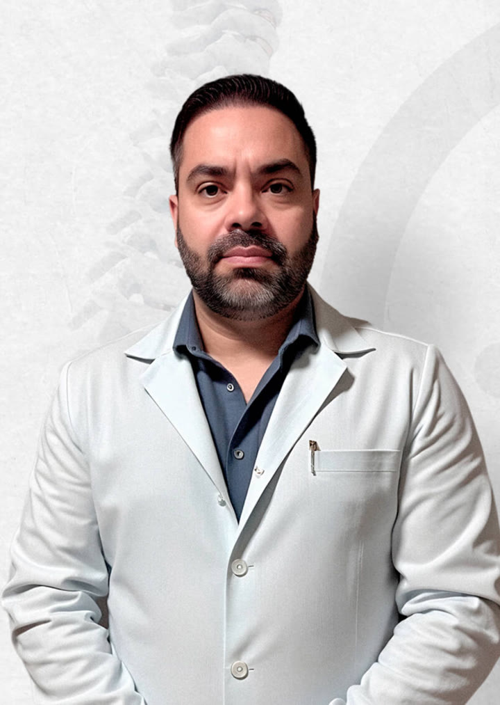
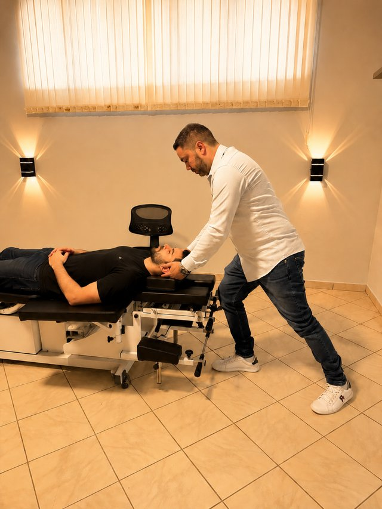
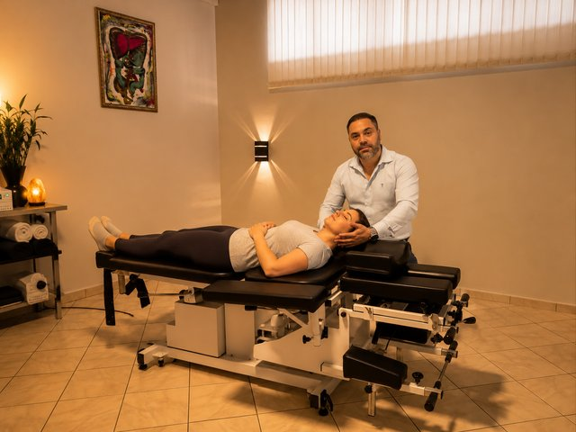
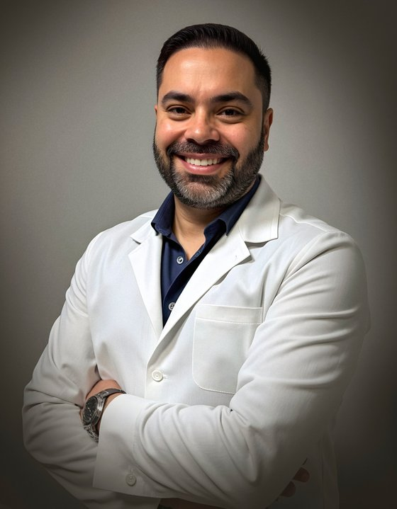

★★★★★
“Excelente profissional, atendimento excepcional. Resolveu rapidamente as minhas dores de coluna. Obrigada.”
Fisioterapia especializada em coluna
A causa é que gera o sintoma. Por isso você não melhora: enquanto ela continuar ali, a dor volta. É a causa que precisa ser resolvida. É ela que eu investigo na sua consulta.
Atendimento particular · Clínica Equilibrium · Pontal/SP

01 · Pacientes reais
Cada caso é único, mas o padrão se repete: quem trata a causa, sai da dor e volta a viver.
“Excelente profissional, atendimento excepcional. Resolveu rapidamente as minhas dores de coluna. Obrigada.”
“Excelente profissional, muita clareza na explicação do meu caso.”
“Fui super bem atendida, profissional especializado, com excelente resultado. Maravilhoso, muito obrigado!”
“Fui muito bem atendida, desde a secretária Gabriela até o Felippe, que me explicou todo o processo de transformação corporal e tratamento das dores que possuo. A clínica é aconchegante e fui muito bem cuidada.”
“Atendimento ímpar! Profissionalismo e eficácia do tratamento garantidos!”
“Ótimo atendimento, desde a hora da entrada na clínica até os profissionais do pilates e da osteopatia. Recomendo demais.”
★★★★★ Nota 5,0 · 34 avaliações no Google
02 · Identificação
Marque as situações que se aplicam ao seu caso. Se 3 ou mais, este tratamento pode ser pra você.
Você marcou 3 situações. Esse é exatamente o perfil de paciente de coluna que eu avalio todos os dias.
03 · Por que nada funcionou
Cada tentativa tratou o sintoma. Nenhuma tratou a causa específica do seu caso.
"Vai aliviar a dor."
Aliviou. Voltou. Trata sintoma, não causa.
"Precisa descansar."
Melhorou, depois piorou. Músculos atrofiam.
"Faz uma ressonância."
Voltou com um laudo. Laudo não é diagnóstico.
"Choquinho, gelo, calor."
Zero resultado. Sem raciocínio clínico.
"É o único jeito."
Medo e indecisão. Falso pra maioria dos casos.
deslize ou toque nos pontos
O problema não é você. O problema é que você foi tratado como se sua coluna fosse igual à de todo mundo. Cada coluna tem uma causa única pra dor.
04 · A verdade sobre cirurgia
dos casos de hérnia não precisam de cirurgia. A indicação cirúrgica é válida apenas para casos com sintomas neurológicos graves e refratários.
dos operados ficam iguais ou piores após a cirurgia. Risco que poucos comentam antes de indicar o procedimento.
pessoas operadas precisa operar de novo em até 4 anos. Reoperação é mais complexa e tem prognóstico pior que a primeira.
Tratando a causa, e não só o sintoma, é possível recuperar alinhamento, função e qualidade de vida sem recorrer à cirurgia.
*Imagem usada com autorização. Resultados variam conforme cada caso.
05 · O método
Cada paciente tem um plano único. Sem protocolo pronto. Sem promessa de milagre. Lógica clínica aplicada à sua coluna específica.
A consulta começa na conversa: toda dor tem uma história. Depois vêm os testes clínicos, os testes compressivos e o exame de movimento, que identificam a causa específica da sua dor, não só onde ela aparece.
Nada de protocolo pronto. Cada paciente recebe um plano único, baseado na patologia, idade, condição física e rotina de trabalho.
Osteopatia pra devolver mobilidade e aliviar compressão, terapia manual específica pra coluna e pilates terapêutico pra sustentar o resultado. Combinação definida pelo que a consulta mostrou.
Reavaliação contínua e ajuste do plano conforme você responde. Atendimento 1:1, nunca compartilhado, com hora marcada.
06 · Diferencial exclusivo
Em vez de encaixar seu caso em um protocolo de dez sessões iguais, a primeira consulta já identifica a causa e inicia a conduta. Você sai sabendo o que tem e qual é o caminho.

E se o seu caso pedir ressonância, eu peço. Mas peço porque o exame físico indicou, não pra descobrir o que eu deveria ter descoberto colocando a mão em você.
07 · Diferencial exclusivo
A conduta começa na primeira consulta e termina em um plano de fortalecimento que sustenta o resultado. O pilates terapêutico, aqui dentro, é o que garante que a dor não volte quando você sair da fase aguda.

O que muita gente pensa que é
Aula em grupo, mesma sequência pra todo mundo, sem consulta individual.
O que é de verdade
Exercício prescrito pelo fisioterapeuta, desenhado pra sua coluna, com progressão controlada.
08 · Filtro honesto
Preferimos perder você aqui, em 30 segundos de leitura honesta, do que decepcionar você no consultório.
Se você se reconheceu na coluna da esquerda, esse tratamento foi feito pra você.

09 · Quem é
Sou fisioterapeuta especialista em coluna, osteopata certificado e instrutor de Pilates. Minha atuação sempre foi direcionada ao tratamento conservador da coluna, com foco em evitar intervenções desnecessárias e conduzir cada caso com raciocínio clínico, técnica e acompanhamento individualizado.
Ao longo dos anos, fui construindo uma forma de trabalhar baseada em consulta, resposta ao movimento e evolução clínica. Osteopatia, terapia manual e Pilates terapêutico fazem parte do meu repertório, mas nenhuma técnica entra no tratamento de forma automática. Cada recurso precisa fazer sentido para aquele paciente, naquele momento.
O que mais me interessa é devolver função. Ver alguém que chegou travado voltar a trabalhar, dirigir, treinar ou simplesmente se movimentar sem medo. Ver um paciente que acreditava que a cirurgia era o único caminho perceber que existiam outras possibilidades.
Meu objetivo é fazer o paciente entender o próprio corpo, recuperar capacidade e voltar a ter confiança na coluna.
Se você está com dor e já ouviu que precisa apenas conviver com ela, talvez ainda falte entender melhor o que está acontecendo. Antes de aceitar isso como definitivo, vale investigar a causa com mais profundidade.
10 · Como funciona
Cinco etapas claras. Sem surpresas. Você sabe exatamente o que esperar em cada momento.
Mensagem no WhatsApp, 3 perguntas, agendamento.
5 minHistória, testes clínicos e exame de movimento. Diagnóstico claro.
PresencialApresentação do plano, prognóstico e investimento.
TransparenteAtendimento 1:1, com conduta iniciada já na primeira consulta.
Retorno em 3 diasPlano de fortalecimento e pilates terapêutico de manutenção.
ManutençãoA conduta começa dentro da própria consulta, não depois de dez sessões. Quanto tempo o seu caso vai levar, ninguém honesto responde antes de te examinar. Mas, em média, 4 a 6 semanas resolvem a maioria dos casos.
11 · Perguntas frequentes
Se sua dúvida não estiver aqui, manda no WhatsApp, a equipe ou eu respondemos em até 1h em dia útil.
Não. Atendimento exclusivamente particular.
Convênio limita o tempo de consulta, não permite usar todas as técnicas necessárias e obriga protocolo genérico. O resultado é o paciente passando vinte sessões sem sair do lugar. Aqui, a consulta é longa, o plano é construído pra você e a conduta começa na primeira consulta.
Não. O fisioterapeuta é profissional de primeiro contato: eu avalio, determino a conduta e executo a conduta. Você pode marcar diretamente.
O tamanho da hérnia não define gravidade nem necessidade cirúrgica. Você pode ter uma hérnia extrusa e ainda assim responder muito bem a tratamento conservador. A indicação cirúrgica depende de sinais neurológicos específicos, não do que a imagem mostra.
Errado. Dor intensa assusta, mas não é sinônimo de gravidade estrutural. A maioria das dores por hérnia é compressiva, vem do nervo pinçado, e cede quando o espaço é devolvido com técnica manual, descompressão e controle da inflamação. Operar sem precisar troca uma dor por outra, só que irreversível.
Laudo não é diagnóstico. Mais da metade das pessoas sem dor nenhuma apresenta hérnia na ressonância. A indicação cirúrgica real depende de três critérios: perda de força progressiva, alteração no controle de esfíncter e piora neurológica mesmo com tratamento bem conduzido. Fora isso, a maioria dos casos resolve sem bisturi.
O estalo faz barulho, não faz estrago. O movimento da quiropraxia é um movimento que o seu corpo já permite fazer, e só é feito depois da consulta. Nenhuma técnica é aplicada sem indicação clínica.
O problema não é a fisioterapia. É qual fisioterapia você recebeu. Se você passou por sessões de choquinho, gelo e aparelho, isso não é tratamento de coluna, é alívio temporário. Fisioterapia especializada em coluna começa por consulta detalhada e usa técnicas manuais aplicadas pra sua causa específica.
Você manda mensagem, responde 3 perguntas básicas sobre seu caso e a equipe verifica disponibilidade pra consulta presencial. Simples.
O tratamento é necessariamente presencial. A consulta exige exame físico e testes de movimento que não funcionam por vídeo.
Não existe resposta honesta antes da consulta. Depende da causa, de há quanto tempo você está assim, da sua rotina e de como seu corpo responde. Mas, em média, pacientes relatam melhora significativa entre a 2ª e a 4ª sessão, e alta em 4 a 6 semanas na maioria dos casos.
Não. E desconfie de quem der.
Coluna não é peça de carro: cada corpo responde de um jeito, e nenhum profissional sério promete resultado antes de avaliar. O que eu garanto é critério clínico, plano honesto e acompanhamento próximo.
O investimento varia conforme a complexidade do seu caso e o que ele exige: só consulta, ou consulta com plano completo e pilates terapêutico de manutenção. Valores são apresentados após a consulta, com transparência e sem compromisso.
Atendemos a partir de adolescentes. Idosos: sim, com adaptação do protocolo. Crianças e casos neurológicos não são o nosso foco.
Clínica Equilibrium — Coluna e Pilates, em Pontal. Endereço completo e WhatsApp no rodapé desta página.
12 · Última chamada
Cada semana que passa sem o tratamento certo é mais uma semana de:
Quanto antes a causa for investigada, mais caminhos de tratamento continuam abertos pra você.
Passo 1 de 5
Passo 2 de 5
Passo 3 de 5
Passo 4 de 5
Passo 5 de 5
Escreva seu nome pra gente saber com quem falar.
Escreva um WhatsApp válido, com DDD.
Seus dados são usados só pra agendar sua consulta.
Fora da área de atendimento
A consulta exige exame físico, então não existe versão online. Se quiser, manda uma mensagem no WhatsApp contando seu caso que a gente te orienta sobre o próximo passo possível na sua região.
Falar mesmo assim →Só atendimento particular
Convênio limita o tempo de consulta e obriga protocolo genérico. É o que faz alguém passar vinte sessões sem sair do lugar. Pra entregar o tratamento que entrego, preciso de tempo pra avaliar, raciocínio clínico pra decidir e técnica pra executar.
Se quiser saber os valores antes de decidir, é só chamar.
Saber os valores →